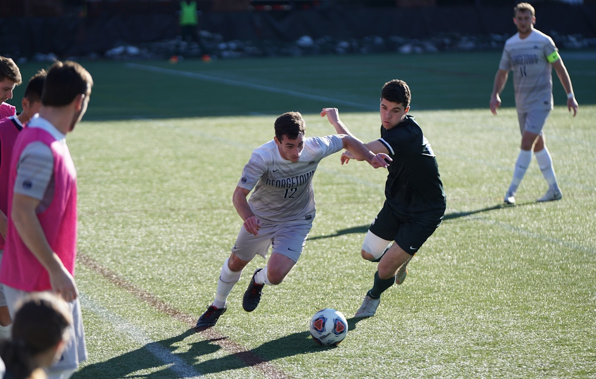

If this is how the season ends, what a way to end it. Rovers closed the campaign with a performance that had everything — an early lead, a wobble, a penalty conceded by our own captain's backside (more on that later), and a finish from Marcus Dennard that people will describe with their hands in the clubhouse for years.
Twelve minutes in, one-nil
The opener came the way most of our good things came this season: Fofana overlapping on the left, a cutback with pace, and Dennard arriving at the near post like a man late for a bus. His nineteenth of the season, and The Fen barely had time to spill its first tea.
Kirkstall are no mugs — fourth in the table on merit — and for twenty minutes either side of half-time they pushed us back. Brzezinski made two saves he'd call routine and one, low to his left from Garside, that he absolutely couldn't.
The wobble
On 63 minutes the game got silly. A corner swung in, a scramble, and the referee decided the ball had struck Mercer's arm on its way through a crowd of eleven bodies. Contested is putting it politely — the linesman got a full and frank review from the tea hut queue. Garside sent the penalty the other way from Brzezinski's dive, and it was 1–1 with the wind picking up.
"I've seen them given and I've seen them not given. I've just never seen one given off a hip." — Danny Whitlow, keeping it diplomatic
Dennard settles it
The response took eight minutes and it was worth the wait. Pryce won the ball high, fed Tetteh, and his low cross was met by Dennard on the half-turn — a finish so clean the keeper didn't move. 2–1, and the noise off the old stand roof was the loudest of the season.
Okoye added the third on 78, driving in from midfield and beating his man twice for the sheer fun of it before rolling it into the far corner. A debut season, a first Beeches goal, and a song already half-written by the time he'd finished celebrating.
What it means
Second place, 81 points — three short of Marsh End, our best finish since the 2019 title. Six academy graduates played league minutes this season. The gap is one away win. That's the winter's homework, and on this evidence, nobody fancies playing us next August.
Teams
- Rovers: Brzezinski; Hopkins, Mercer (c), Vaughan, Fofana; Dahl, Okoye; Tetteh (Siddall 81), Pryce, Byrne; Dennard.
- Kirkstall: Meadows; Clough, Barrett, Osei, Lund; Whitham, Garside (c); Reaney, Doyle, Mbeki; Sharrock.
- Referee: A. Pilkington · Attendance: 734